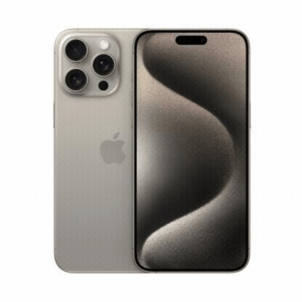
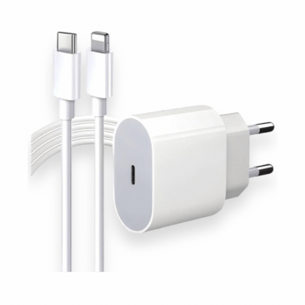
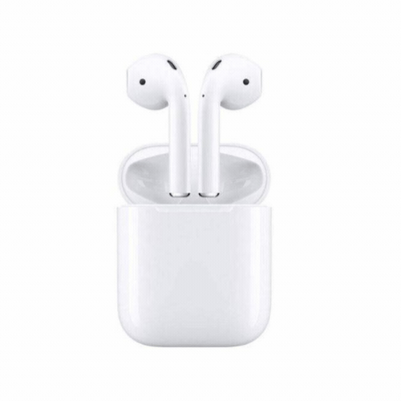
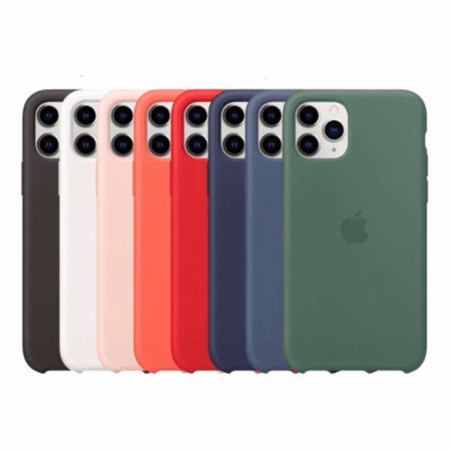

Produtos |
Descrição |
Comprar |
|---|---|---|
|  | O iPhone 15 Pro é um dos modelos mais avançados da linha anunciada em 2023. Comparando com os modelos mais “simples”, esse dispositivo entrega três sensores fotográficos em seu verso, proporcionando mais recursos para fotos e vídeos. Uma grande novidade presente no aparelho é a conexão USB-C, que garante melhorias no carregamento, bem como enquadra o aparelho no padrão de entrada mais usada por donos de smartphones |
Ver Oferta |
|  | O carregador 20W é a solução ideal para quem busca um carregamento eficiente, seguro e confiável para seus dispositivos. Projetada com tecnologia de ponta, esta fonte oferece uma experiência de carregamento otimizada, garantindo rapidez e proteção para seus aparelhos. Comumente conhecido como cabo Lightning, ele apresenta um conector pequeno e reversível em uma das extremidades, facilitando a inserção em iPhone, iPad ou iPod. |
Ver Oferta |
|  | Com o novo fone Wave Flex você aproveita o áudio com uma alta qualidade! Com seu design ergonômico do stick aberto o fone que se encaixa perfeitamente, que faz com que ele fique confortável, assim esquecendo que você está usando. Além de ter 8 horas de duração da bateria nos fones de ouvido e até 24 no estojo, o JBL Wave Flex te oferece áudio o dia todo. |
Ver Oferta |
|  | As Capas são vastamente conhecidas pela sua proteção, estilo e sofisticação. Capas para iPhone com mais de 2.000 estampas para escolher e personalizar, além de Capas Premium Exclusivas que você não encontra em nenhum outro lugar. |
Ver Oferta |